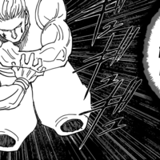

Favourite thing from the WCI arc? I really liked the character interaction between the Big Mom pirates and the civilians. They might not be perfect but they still acted like an actual kingdom should and probably gave more of a shit about their subjects than most nobility in the series. It was also a nice contrast to the Doflamingo family when they pretty much just used Dressrosa as a means to an end for their SMILE production

Might be too deep for you go read PlotxPlot
11:00>>176907700 It's crazy. Do they really have nothing better to do? They also never have any real criticism.
12:40
How many years will Wano be?
12:45>>176907573 (OP) Obviously the luffy fights. Great action with a lot of devlopment inferred through the interactions.
13:01